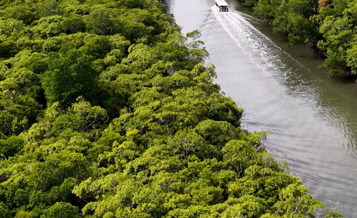

Licenciamento
ambiental
Assessoria para regularização e licenciamento de atividades e empreendimentos.
↗Consultoria técnica, licenciamento e gestão ambiental personalizada para empresas que buscam operar com responsabilidade e confiança.
A Capital Soluções Ambientais oferece consultoria e gestão ambiental com soluções completas e personalizadas para demandas legais, técnicas e operacionais de empresas de diversos segmentos.
Trabalhamos para simplificar processos, reduzir riscos e fortalecer a segurança jurídica, sempre com responsabilidade socioambiental e orientação técnica.
Conheça nossos diferenciaisSoluções técnicas e estratégicas com foco na conformidade legal, segurança e sustentabilidade da sua operação.
Assessoria para regularização e licenciamento de atividades e empreendimentos.
↗Acompanhamento e atendimento às exigências das licenças ambientais.
↗Soluções de controle, tratamento e adequação de água e efluentes industriais.
↗Regularização e orientação técnica para uso de recursos hídricos.
↗Monitoramento, controle e adequação das emissões conforme a legislação.
↗Programas de prevenção e controle ambientalmente adequados.
↗Também atuamos com tratamento de água para consumo humano e outras soluções técnicas sob demanda.
Conheça nossos trabalhos. Esta galeria foi preparada para você adicionar fotos reais e descrições de cada projeto.
 ÁGUA E EFLUENTES
ÁGUA E EFLUENTESEspaço para descrever o serviço executado, o desafio e os resultados obtidos.

LICENCIAMENTOAdicione uma foto do empreendimento e conte como a equipe atuou.
 MONITORAMENTO
MONITORAMENTOApresente a atividade de campo, as análises e o acompanhamento técnico.
 GESTÃO AMBIENTAL
GESTÃO AMBIENTALMostre o projeto realizado e os principais benefícios para o cliente.
* Projetos e imagens exibidos como exemplos de preenchimento. Substitua pelos trabalhos reais antes de publicar.
Fale sobre seu projetoConhecimento técnico e compromisso para entregar soluções que geram valor real para o seu negócio.
Atuação alinhada à legislação ambiental vigente.
Acompanhamento de processos e obrigações legais.
Processos mais claros e uso responsável de recursos.
Desenvolvimento com responsabilidade ambiental.
Identificação e mitigação de impactos ambientais.
Solicite uma análise, tire suas dúvidas ou converse com nossa equipe. Atendimento direto e personalizado.
Falar pelo WhatsApp